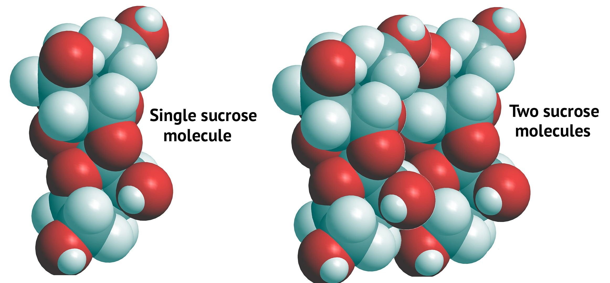

Why objects exist. For objects that are big enough for humans to see to exist, there must be forces that bond molecules to other molecules. The molecules of a specific substance (for example, salt) are attracted to other molecules of the same kind to form that substance. This is why we can see a drop of water or a grain of salt.
Oppositely-charged areas of different molecules are attracted to each other due to electric force.
Sugar molecules (Advanced): Individual sugar molecules—such as sucrose—are attracted to each other. These attractions are caused by electric forces from oppositely-charged areas of different sugar molecules. That is, areas of sucrose molecules that are negatively charged are attracted to positively charged areas of other sucrose molecules (and vice versa).
Sugars are much more complex molecules than salts (such as NaCl, which is made of only two atoms). Because of this, the electric force attractions that hold individual sugar molecules together are harder to show. But the picture below shows ("space-filling" models of) a single sucrose molecule (left) and two sucrose molecules (right).



***Note for Teachers: You can access more information about this website and find other resources for science inquiry on the ISP Tutor website.
©2021 Klahr Lab, Carnegie Mellon University. All Rights Reserved
Carnegie Mellon University | Dept. of Psychology | 5000 Forbes Ave. | Pittsburgh, PA 15213 The TED project was funded in part by the Institute of Education Science (IES), Grant R305H060034, and in part by the National Science Foundation, Grant SBE035442. The ISP Tutor project is funded by IES, Grant R305A170176.
The research reported here was supported by the Institute of Education Sciences, U.S. Department of Education, through Grant R305A170176 to Carnegie Mellon University. The opinions expressed are those of the authors and do not represent views of the Institute or the U.S. Department of Education.